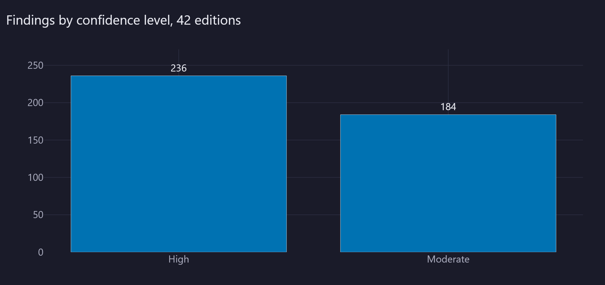

Assurance
How the results are checked.
A measurement of a conflict is only useful when its reader can see how far to trust it. CIP states a confidence level on every finding, keeps a data file behind every figure, audits its own sources and declines to answer when the record does not support an answer.
Traceability
Every result leads back to the document behind it.
Each event, claim and relationship in the record keeps the source report it came from, and each figure on this site is published with the table behind it and a file that states the method, the window, the date of the data and the command that reproduces it. The figure manifest lists them all.
Nothing in the record is overwritten. A corrected value keeps its history, so an earlier figure can be explained after the record has moved on. The methodology describes how corrections are logged.
Confidence levels
A confidence level on every finding.
Each finding in an edition carries a level that reflects how much data stands behind it and how it performed against its own checks. Across the 42 editions built on the record, 420 findings were published. 236 carry High confidence (56%) and 184 carry Moderate (44%).


Reproducibility
The same question on the same data returns the same answer.
The methods are deterministic. A result is fixed by the data, the configuration version and the window, and all three are written into the file beside each figure. The figures on this site were produced under configuration 14 on data as of 15 November 2026.
Where a run has to be split, the split is published. Escalation detection over the full record ran as three overlapping windows, each repeating 35 days of the one before it so that every day is judged against its full baseline. The run windows (CSV) list them.
Checks
Tested against chance, checked blind, declined when unsupported.
Against chance
9,195 tests, 8 standing links
With 613 pairs of series under test, 776 results pass a single test where about 460 would pass by chance alone. CIP therefore reports a link as standing only after it has held at four consecutive weekly cutoffs. 8 do.
Test counts (CSV)
Blind check
20 of 20 claims verified
Before The Period Brief was published in September 2026, 20 of its 42 claims were drawn at random and checked against the run output under a rule fixed in advance, where one error fails the brief. A first draw found one error in 20. It was corrected and a fresh draw passed 20 of 20.
The Period Brief
Declined answers
3 entries declined, with reasons
In the latest edition the platform declined 3 of 141 entries because the record does not hold what the method needs, and said so in the edition.
The declined entries
The software itself is held by more than 12,000 automated tests.
Source audit
The sources are measured, not assumed.
Each source enters the record with an assigned reliability tier. The source reliability audit then compares that tier with the measured behaviour of the source's claims. On the full record it audited 46 sources, found 13 whose behaviour departs from their tier and moved 7 to a different tier.
The audit rests on the part of the record that arrives as explicit claims, which is a small share of all assertions, and the result carries that limit. The known limitations are published in full.